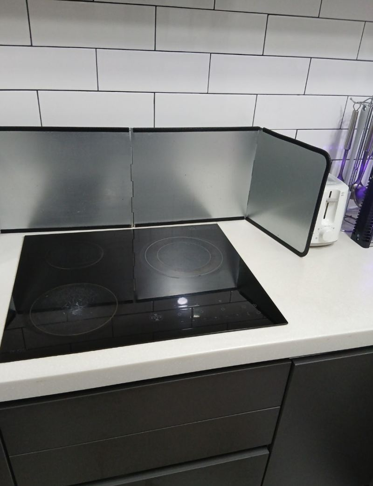
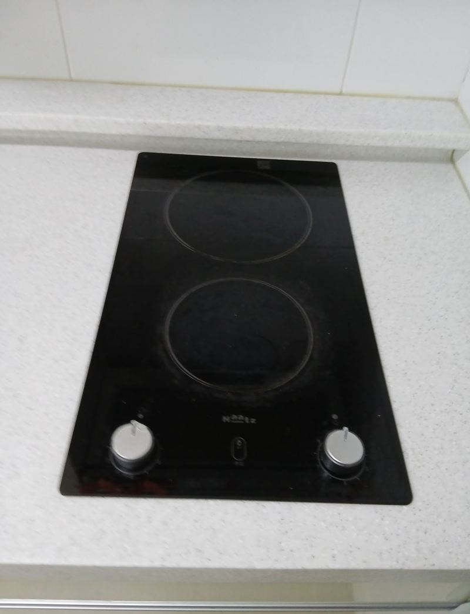
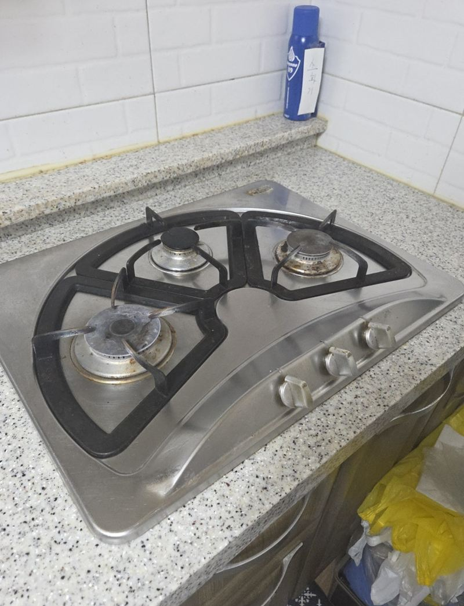
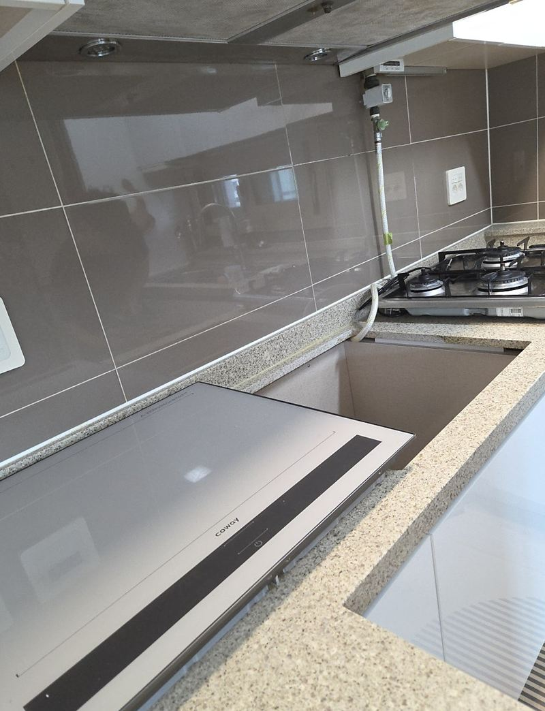
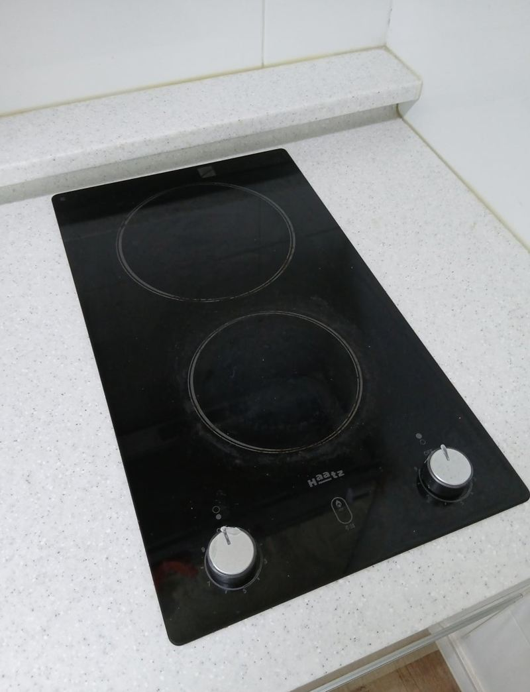
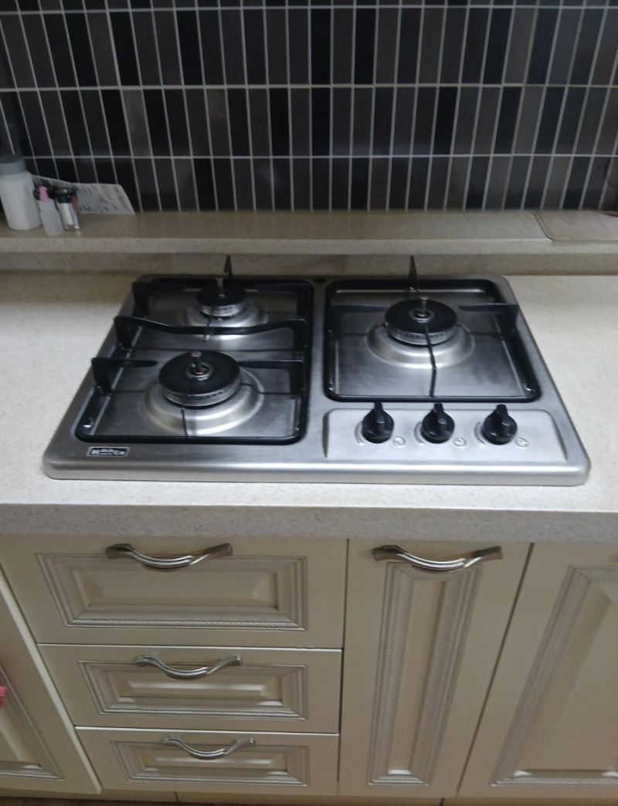

홈 › 인덕션·하이라이트
인덕션·하이라이트 교체
방법과 비용 모음
"갑자기 꺼져요", "한쪽 화구만 안 돼요", "새로 산 인덕션이 구멍에 안 맞아요." 쿡탑 문의는 대부분 이 세 가지예요. 가스레인지를 전기 쿡탑으로 바꾸는 일도 함께 해요. 제품 교체에서 끝나지 않고, 상판 구멍 크기를 맞추는 것까지가 이 작업의 핵심이에요.

새 제품과 상판 구멍, 이렇게 맞춰요
- 새 제품이 더 클 때대리석·인조대리석 상판을 표시선대로 넓혀 잘라요.
- 새 제품이 더 작을 때남는 틈을 막거나 구멍을 메워 마감해요.
- 2구에서 3구로 바꿀 때하부장 안 전원 용량과 콘센트 위치도 같이 봐요.
- 가스레인지를 뺄 때가스 배관 정리 여부를 먼저 확인해요.
수리할까, 바꿀까
오래 쓴 하이라이트는 상판 유리에 금이 갔거나 내부 기판이 나간 경우가 많아서 교체를 권하는 편이에요. 반대로 비교적 새 제품이라면 제조사 서비스를 먼저 받아 보시는 게 나을 때도 있어요. 모델명과 사용 기간을 알려주시면 어느 쪽이 맞을지 같이 봐요.
쿡탑 바꾸기 전에 많이 찾아보시는 것
지역별 인덕션·하이라이트 현장
 남양주 2구 인덕션 설치 교체 비용과 순서남양주
남양주 2구 인덕션 설치 교체 비용과 순서남양주 부천 하이라이트·인덕션 수리 vs 교체 기준부천 · 블로그 현장기 ↗
부천 하이라이트·인덕션 수리 vs 교체 기준부천 · 블로그 현장기 ↗
부천 3구 인덕션·하이라이트 차이와 교체 방법부천 · 블로그 현장기 ↗ 천안 인덕션·가스레인지 대리석 구멍 막음 비용천안 · 블로그 현장기 ↗
천안 인덕션·가스레인지 대리석 구멍 막음 비용천안 · 블로그 현장기 ↗
천안 하이라이트 불 꺼짐, 교체 방법과 순서천안 · 블로그 현장기 ↗ 마포 인덕션·하이라이트 작동 안 될 때 교체 방법서울 마포 · 블로그 현장기 ↗
마포 인덕션·하이라이트 작동 안 될 때 교체 방법서울 마포 · 블로그 현장기 ↗
인천 미추홀 과열방지 가스레인지 교체 방법인천 미추홀 · 블로그 현장기 ↗ 남양주 2구 하이라이트 크기 확장 교체 방법남양주 · 블로그 현장기 ↗
남양주 2구 하이라이트 크기 확장 교체 방법남양주 · 블로그 현장기 ↗
용인 수지 인덕션 사이즈 안 맞을 때 상판 컷팅용인 수지 · 블로그 현장기 ↗
수원 인덕션 화구 작동 안 될 때 교체 방법수원 · 블로그 현장기 ↗
양천 가스레인지 불 안 켜질 때 점검 방법서울 양천 · 블로그 현장기 ↗
인덕션 교체 질문
제품은 제가 사 두면 되나요?
네, 구매하실 모델의 치수(가로·세로·타공 크기)를 미리 알려주시면 지금 구멍에 맞는지 봐 드려요.
상판 자를 때 먼지가 많이 나나요?
절단 작업이라 분진이 생겨요. 주변을 덮고 작업한 뒤 정리까지 하고 마무리해요.
지금 쓰는 쿡탑 모델명과 새로 달 제품 정보를 알려주세요.
전화 상담 010-4517-9872